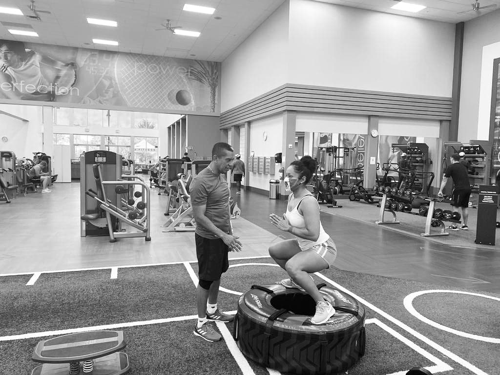

J. Luis
"WHAT SEEMS IMPOSSIBLE TODAY WILL SOON BECOME YOUR WARM-UP"
Couch J. Luis
Each person possesses different methods of motivation. Everyone’s
abilities and requirements are different when it comes to exercise.
I will not only help you set realistic goals that you will be able to achieve,
but also keep you on track to hit those goals. If you don’t know which exercises
are most effective for the goals you have, you are unlikely to achieve them.
Also many people are seriously injured by performing exercises they have not received training for,
and this can impact their health and fitness for a long time.
Ok now, Do you think a Couch would be right for you?
Whatever the reason behind your decision for a healthier life is, let me tell you that you are not alone , with over 5 years of expirience and real results "Me" being 1 them , I'm here to get you started on a fitness routine that is right for you.